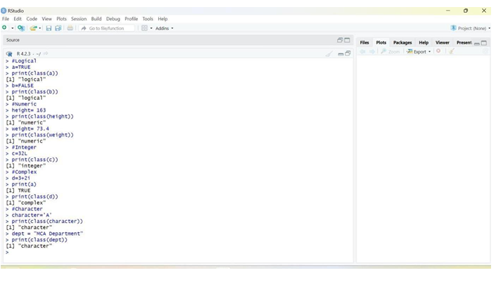

To classify the test data to a target attribute based on the model built using the training data with the help K-NN classification algorithm.
o Install the necessary package in R Studio such as “class”
o Set the current working directory
o Save the dataset in the current working directory
oRead the dataset in the form of csv file using read.csv ()
o Finally create the model using kNN algorithm with the help of training data.

o Define and Assign Values – Assign logical, numeric, integer, complex, and character values to
variables.
o Check Data Types – Use functions to verify the data type of each variable.
o Execute the Program – Run the R script in RStudio or any R environment.
oVerify Output – Observe and confirm the correct data types are displayed.
# Loading data
data(iris)
# Structure str(iris)
# Installing Packages
Install.Packages("e1071")
install.packages("caTools")
install.packages("class")
# Loading packageB
library(e1071)
library(caTools)
library(class)
# Loading data
data(iris)
head(iris)
# Splitting data into train and test data
split <- sample. split(iris, SplitRatio = 0.7)
train_cl <- subset(iris, split == "TRUE")
test_cl <- subset(iris, split == "FALSE")
# Feature Scaling
train_scale <- scale(train_cl[, 1:4])
test_scale <- scale(test_cl[, 1:4])
head(train_scale)
head(test_scale)
# Fitting KNN Model to training dataset
classifier_knn <- knn(train = train_scale,
test = test_scale,
cl = train_cl$Species, k = 1)
classifier_knn